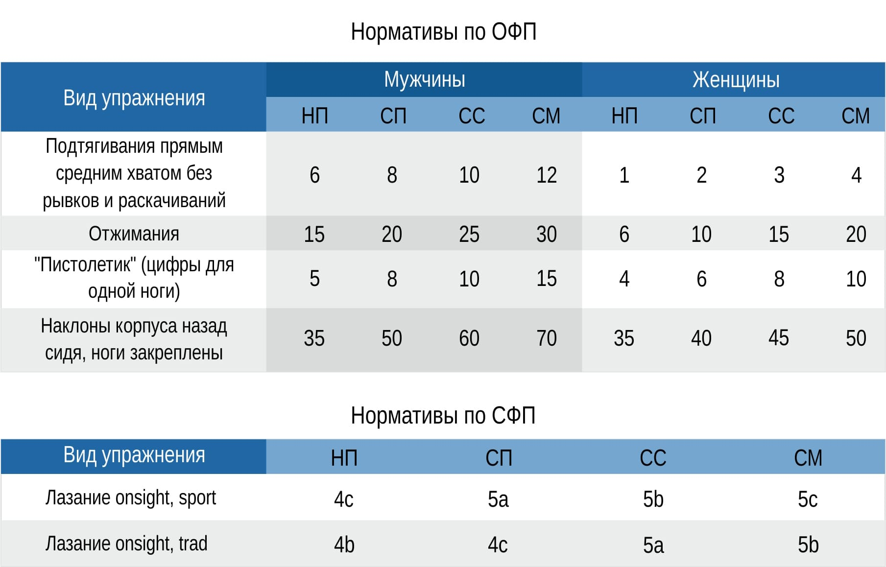

Нормативы по ОФП и СФП
НП - начальная подготовка (новичок, значок "Альпинист России, выполнение норм 3 разряда) СП - спортивная подготовка (3 спортивный разряд по альпинизму, выполнение норм 2 разряда) СС - спортивное совершенствование (2 спортивный разряд по альпинизму, выполнение норм 1 разряда) СМ - спортивное мастерство (1 разряд по альпинизму и выше)
Порядок присвоения спортивных разрядов
Выдержка из "Положения о Единой всероссийской спортивной классификации" (от 10 апреля 2020 г. № 295 (вступил в силу 01.06.2020) IV. Порядок присвоения спортивных разрядов 45. Спортивные разряды КМС и «первый спортивный разряд» присваиваются соответственно сроком на 3 и 2 года Органами исполнительной власти (за исключением случаев присвоения сотрудникам федеральных органов, принадлежность которых к таким федеральным органам отнесена к сведениям, составляющим государственную тайну) по представлению, содержащему фамилию, имя, отчество (при наличии), дату рождения спортсмена, а также сведения о результате спортсмена, показанном на соревновании (далее – представление для присвоения спортивного разряда), заверенному печатью (при наличии) и подписью руководителя или уполномоченного должностного лица региональной спортивной федерации или подразделения федерального органа, по месту территориальной сферы деятельности региональной спортивной федерации или по месту нахождения подразделения федерального органа. 46. Спортивные разряды «второй спортивный разряд» и «третий спортивный разряд» присваиваются сроком на 2 года органами местного самоуправления муниципальных районов и городских округов (далее – Органы местного самоуправления) (за исключением военно-прикладных и служебно-прикладных видов спорта) по представлению для присвоения спортивного разряда, заверенному печатью (при наличии) и подписью руководителя региональной спортивной федерации или уполномоченного должностного лица, или местной спортивной федерации (далее при совместном упоминании – спортивные федерации) по месту их территориальной сферы деятельности. 47. Спортивные разряды «первый юношеский спортивный разряд», «второй юношеский спортивный разряд», «третий юношеский спортивный разряд» присваиваются сроком на 2 года физкультурно-спортивными организациями, организациями, осуществляющими спортивную подготовку или образовательными организациями (за исключением военно-прикладных и служебно-прикладных видов спорта), по представлению для присвоения спортивного разряда, подписанному тренером-преподавателем (включая старшего), педагогом дополнительного образования (включая старшего), руководителем физического воспитания, тренером, или по обращению спортсмена или его законного представителя (далее – Заявитель), по месту жительства спортсмена или по месту нахождения физкультурно-спортивной организации, организации, осуществляющей спортивную подготовку или образовательной организации. 49. Представление для присвоения спортивного разряда или обращение и прилагаемые к нему документы, предусмотренные пунктом 50 Положения (далее – документы для присвоения спортивного разряда), подаются в Органы исполнительной власти, Органы местного самоуправления, физкультурно-спортивные организации, организации, осуществляющие спортивную подготовку, образовательные организации или подразделения федерального органа (далее при совместном упоминании – Организация) спортивной федерацией, физкультурно-спортивной организацией, организацией, осуществляющей спортивную подготовку, образовательной организацией, подразделением федерального органа, должностным лицом или Заявителем в течение 4 месяцев со дня выполнения спортсменом норм, требований и условий их выполнения. 50. К представлению для присвоения спортивного разряда или обращению прилагаются: а) копия протокола или выписка из протокола соревнования, подписанного председателем главной судейской коллегии соревнования (главным судьей), отражающего выполнение норм, требований и условий их выполнения – для присвоения всех спортивных разрядов; б) копия справки о составе и квалификации судейской коллегии, подписанной: председателем судейской коллегии (главным судьей) и лицом, уполномоченным организацией, проводящей соревнования – для присвоения спортивных разрядов КМС, «первый спортивный разряд», «второй спортивный разряд», «третий спортивный разряд» (за исключением международных соревнований); председателем судейской коллегии (главным судьей) – для присвоения юношеских спортивных разрядов; в) подпункт утратил силу (приказ Минспорта России от 1 июня 2017 г. № 479); г) две фотографии размером 3х4 см; д) копия документа, удостоверяющего принадлежность спортсмена к физкультурно-спортивной организации, организации, осуществляющей спортивную подготовку или образовательной организации (в случае приостановления действия государственной аккредитации региональной спортивной федерации); е) копии второй и третьей страниц паспорта гражданина Российской Федерации, а также копии страниц, содержащих сведения о месте жительства, а при его отсутствии копии страниц паспорта гражданина Российской Федерации, удостоверяющего личность гражданина Российской Федерации за пределами территории Российской Федерации, содержащих сведения о фамилии, имени, отчестве (при наличии), органе, выдавшем документ, дате окончания срока действия документа (за исключением юношеских спортивных разрядов); Для лиц, не достигших возраста 14 лет, – копия свидетельства о рождении; 51. По результатам рассмотрения документов для присвоения спортивного разряда Организация принимает решение о присвоении спортивного разряда, о возврате документов для присвоения спортивного разряда или об отказе в присвоении спортивного разряда. 52. Решение о присвоении спортивного разряда принимается в течение 2 месяцев со дня поступления документов для присвоения спортивного разряда от спортивной федерации, физкультурно-спортивной организации, организации, осуществляющей спортивную подготовку, образовательной организации, подразделения федерального органа, должностного лица или Заявителя, и оформляется документом, который подписывается руководителем Организации. 54. Копия документа о принятом решении в течение 10 рабочих дней со дня его подписания направляется в спортивную федерацию, физкультурно-спортивную организацию, организацию, осуществляющую спортивную подготовку, образовательную организацию или Заявителю и (или) размещается на официальном сайте Организации в информационно-телекоммуникационной сети «Интернет». 59. В случае если спортсмен в течение срока, на который был присвоен спортивный разряд, повторно выполнил нормы, требования и условия (подтвердил спортивный разряд) (далее – подтверждение), срок действия такого спортивного разряда продлевается на соответствующий срок, установленный пунктами 45-48 Положения, со дня окончания срока, на который он был присвоен. В случае если вследствие отмены соревнований, причинами которой послужили обстоятельства непреодолимой силы, спортсмен не подтвердил спортивный разряд, срок действия такого спортивного разряда продлевается на 12 месяцев со дня окончания срока действия обстоятельств непреодолимой силы. Для принятия решения о подтверждении спортивного разряда, в срок не ранее чем за 2 месяца до дня окончания и не позднее дня окончания срока, на который был присвоен спортивный разряд, в Организацию подается ходатайство о подтверждении спортивного разряда, заверенное печатью (при наличии) и подписью руководителя или уполномоченного должностного лица спортивной федерации, физкультурно-спортивной организации, организации, осуществляющей спортивную подготовку, образовательной организации, подразделения федерального органа, должностного лица или Заявителя соответственно, содержащее фамилию, имя, отчество (при наличии), дату рождения спортсмена, а также сведения о наименовании соревнования, месте и дате его проведения, о выполнении норм, требований и условий их выполнения для подтверждения спортивного разряда, а также фамилию, имя, отчество (при наличии) председателя судейской коллегии (главного судьи) (далее – Ходатайство). К Ходатайству прилагаются копии документов, предусмотренные подпунктами «а», «б» пункта 50 Положения. 60. Решение о подтверждении или об отказе в подтверждении спортивного разряда принимается Организацией в течение 1 месяца со дня поступления Ходатайства в виде документа, который подписывается руководителем Организации. Копия документа о принятом решении в течение 10 рабочих дней со дня его подписания направляется в спортивную федерацию, физкультурно-спортивную организацию, организацию, осуществляющую спортивную подготовку, образовательную организацию или Заявителю и (или) размещается на официальном сайте Организации в информационно-телекоммуникационной сети «Интернет».